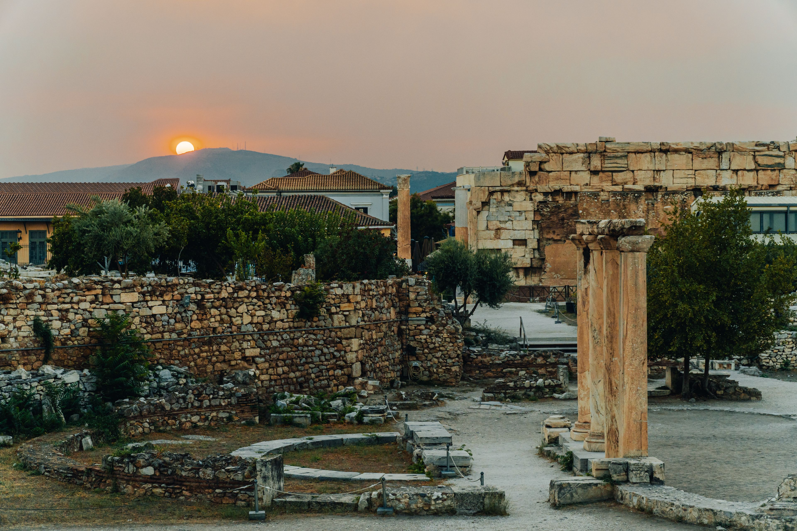

Athens, Greece
Athens is one of the oldest cities in Europe and is famous for its ancient Greek civilisation. The city is home to important archaeological sites, including the Acropolis and the Roman Agora, which reflect its rich cultural and architectural history.
